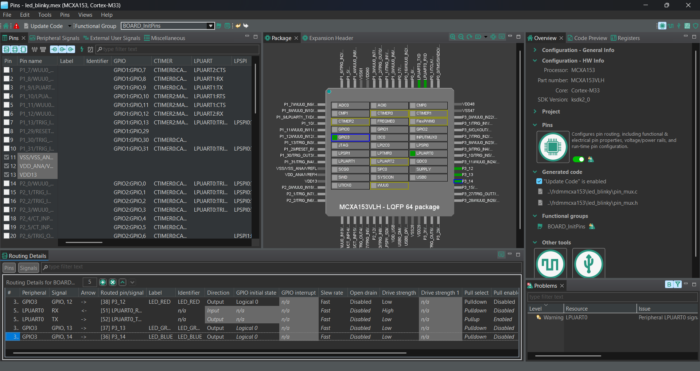
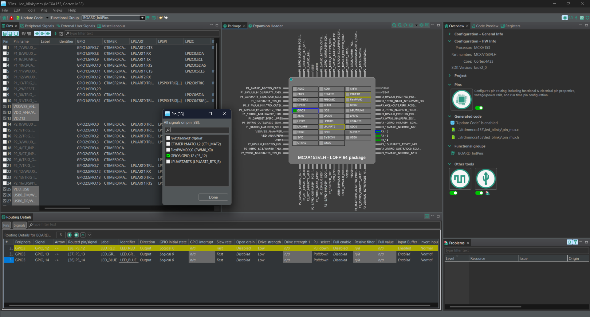
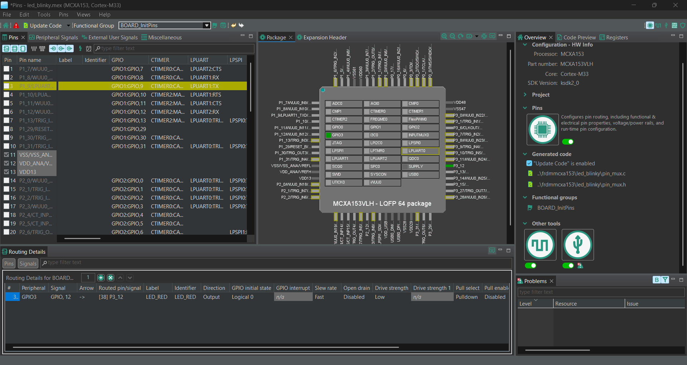

PORT mux + GPIO data pe Cortex-M33
| Ziua / Sesiunea | Ziua 1, 22 iunie — dimineață |
| Periferic | PORT · GPIO · FGPIO |
| Durată | 2h (09:00–11:00) |
| Responsabil | Cadru didactic UPB |
| Hardware | FRDM-MCXA153 · RGB LED D3 · buton SW3 · osciloscop opțional |
Prima lecție de periferic introduce arhitectura GPIO pe Cortex-M33/MCX A — fundamental diferită față de DDR/PORT/PIN de pe AVR. Pe MCX A, configurarea pinului (PORT_SetPinConfig) este separată de controlul datelor (GPIO_PinWrite). Această separare reflectă realitatea SoC-urilor industriale: mux-ul și drive strength sunt independente de logica aplicației.
Board: FRDM-MCXA153 · MCX A153 (Cortex-M33 @ 96 MHz) · SDK MCUXpresso 24.12 · VS Code + CMake
| Interval | Activitate | Detaliu | Cine |
|---|---|---|---|
09:00–09:30 |
Arhitectura GPIO MCX | PORT vs GPIO pe Cortex-M33: pin mux, pull-up/down, drive strength. Registre: PORT_PCRn, GPIO_PDDR, GPIO_PDOR, GPIO_PDIR. Comparație DDR/PORT AVR. |
cadru UPB |
09:30–10:15 |
Demo SDK: RGB LED | CLOCK_EnableClock(kCLOCK_Port3), PORT_SetPinMux(PORT3,12,kPORT_MuxAsGpio), GPIO_PinInit(), GPIO_PinWrite(). Demonstrație anod comun. |
cadru UPB |
10:15–11:00 |
Lab + GenAI session | Studenții: semafor FSM (RED 2s → YELLOW 1s → GREEN 2s) + reset buton SW3. Prompt structurat cu context complet. Identificare erori AI. | student + mentor |
Regulă: Copiați prompt-ul complet — contextul hardware este obligatoriu. AI-ul va genera cod greșit (pentru alte familii NXP sau Arduino) fără aceste informații.
Context hardware: FRDM-MCXA153, MCX A153 Cortex-M33 @ 96 MHz, SDK MCUXpresso 24.12.
RGB LED D3: R=PIO1_7, G=PIO3_12, B=PIO3_13 — ANOD COMUN (../lOW=aprins, HIGH=stins).
Buton SW3: PIO0_6, pull-up intern activat.
Sarcina: funcție void led_set(bool r, bool g, bool b) + FSM semafor RED→YELLOW→GREEN.
Include:
CLOCK_EnableClock(kCLOCK_Port1), CLOCK_EnableClock(kCLOCK_Port3)
PORT_SetPinMux(PORT3, 12u, kPORT_MuxAsGpio)
GPIO_PinInit(), GPIO_PinWrite()
NU folosi Arduino/HAL generic — SDK NXP exclusiv.
FRDM-MCXA153, SDK MCUXpresso 24.12.
Problema: PORT_SetPinMux(PORT3, 12u, kPORT_MuxAsGpio) + GPIO_PinWrite(GPIO3, 12u, 0u)
dar LED-ul verde nu se aprinde. LED-ul roșu (PIO1_7) funcționează corect.
Ce verific?
Hint: CLOCK_EnableClock pe port-ul 3, valoarea kPORT_MuxAsGpio,
și logica anodului comun (../lOW = aprins).
Deschideți fișierul led_blinky.mex cu MCUXpresso Config Tools (click dreapta în VS Code → Open with MCUXpresso Config Tools).
Toolul Pins afișează pachetul LQFP 64 al MCU-ului și lista completă de semnale disponibile. Fiecare pin poate fi asignat unui periferic sau configurat ca GPIO.

Faceți click pe un pin din pachet sau din lista din stânga și selectați semnalul GPIO dorit. Fereastra de selecție afișează toate semnalele disponibile pe acel pin:

Pinul GPIO3_12 este asignat ca LED_GREEN_D3 cu direcție Output. Observați că în tabelul de jos apare semnalul, portul, pinul și configurația de drive:

Notă: După orice modificare în Config Tools, apăsați Update Code pentru a regenera fișierele
pin_mux.c/pin_mux.h.
.mex, Config Tools, codul generat și build-ulFișierul .mex nu este cod executabil. El este modelul de configurare citit de MCUXpresso Config Tools și descrie:
La apăsarea Update Code, Config Tools transformă modelul .mex în surse C. Lanțul complet este:
main.mex
│
├── Pins ──> board/pin_mux.c, board/pin_mux.h
├── Clocks ──> board/clock_config.c, board/clock_config.h
└── Peripherals──> board/peripherals.c, board/peripherals.h
│
└── CMake includează și compilează aceste fișiere
Principiu important: configurația din
.mex, fișierele generate și fișierele selectate de CMake trebuie să descrie aceeași configurație și să folosească aceleași căi.
| Piesă | Rol | Cine o modifică |
|---|---|---|
main.mex |
Sursa de adevăr pentru Config Tools | Config Tools; manual numai cu validare atentă |
pin_mux.c/.h |
Rutarea și caracteristicile electrice ale pinilor | Generate de unealta Pins |
clock_config.c/.h |
Clock-urile globale ale configurației de boot | Generate de unealta Clocks |
peripherals.c/.h |
Inițializarea instanțelor adăugate în Peripherals | Generate de unealta Peripherals |
board_files.cmake / cfg_tools_generated.cmake |
Spun build-ului ce surse generate să compileze | Proiectul/CMake și integrarea Config Tools |
| driverul aplicației | API-ul reutilizabil pentru senzor sau periferic | Scris manual; nu trebuie suprascris de Config Tools |
main.c |
Integrarea și logica aplicației | Scris manual |
Fișierele generate conțin de obicei avertismentul:
/* This file was generated by the MCUXpresso Config Tools.
* Any manual edits made to this file will be overwritten. */
Modificările permanente trebuie făcute în .mex sau în Config Tools. O corecție scrisă numai în pin_mux.c ori clock_config.c poate funcționa până la următorul Update Code, când va fi pierdută.
În .mex, secțiunea generated_project_files stabilește destinația fiecărui fișier. În acest proiect, fișierele generate sunt grupate în:
frdmmcxa153/board/
CMake trebuie să compileze exact aceleași fișiere. Dacă .mex generează în board/pin_mux.c, dar CMake compilează main/pin_mux.c, apar două copii:
În dialogul Update Files, operații de tip create într-un director și delete în alt director indică de obicei o nealiniere a căilor, nu o schimbare funcțională intenționată.
Pentru senzorul P3T1755 de pe FRDM-MCXA153 au trebuit aliniate următoarele:
P0_16 și P0_17 sunt rutate ca LPI2C0_SDA și LPI2C0_SCL.Alt2, input buffer activ, open-drain activ și pull-up activ.pin_mux.c este generat în directorul compilat de CMake.0x48 și rămâne separat de main.c.LPI2C_MasterInit():CLOCK_SetClockDiv(kCLOCK_DivLPI2C0, 1U);
CLOCK_AttachClk(kFRO_HF_DIV_to_LPI2C0);
Ultimul punct ilustrează două modele valide de ownership:
clock_config.c îi configurează clock-ul.Nu combinați accidental cele două modele și nu introduceți manual identificatori necunoscuți în .mex. Unele clock-uri sunt derivate de Config Tools și acceptă numai setările expuse în interfața grafică. Un câmp XML inventat poate produce mesajul Invalid settings.
.mex activ, directorul generat și fișierele compilate de CMake..mex al aplicației corecte?Project Link indică rădăcina în care trebuie generate fișierele?pin_mux.c, clock_config.c și peripherals.c?Regulă practică: dacă Config Tools propune o schimbare neașteptată, apăsați Cancel, identificați mai întâi ce fișier este sursa de adevăr și ce fișier compilează CMake, apoi corectați modelul sau căile. Nu acceptați dialogul doar pentru a vedea dacă proiectul mai funcționează.
Ce GenAI nu știe fără context explicit — verificați înainte de upload pe placă.
CLOCK_EnableClock(kCLOCK_PortX) trebuie apelat pentru fiecare port folositkPORT_MuxAsGpio poate diferi ca valoare numerică între familii MCX — verificați enum-ul din fsl_port.hGPIO_PinWrite(GPIO3, 12u, 0u) = LED verde APRINS (nu stins — anod comun)Semafor FSM funcțional pe RGB + buton SW3 polling + 3 prompts documentate în Moodle cu analiza erorilor AI
← L0: Setup Toolchain & Prima Aplicație · L2: LPUART — Comunicație Serială →